企业级大数据项目开发流程
项目调研：技术？业务？【对业务很了解】
产品经理、非常熟悉业务、项目经理
需求分析：明确做什么 做成什么样子的（做东西不要局限于某个技术）
用户提出来的：显示【实现较为简单】
隐式的需要自己来实现
方案设计
概念设计（模块，模块中有哪些功能点）【国内一般都是后补详细设计也就是设计文档】
详细设计（具体到所有功能的实现，本套系统用哪些技术来搞定，每个功能点涉及到哪些表哪些模块，表的字段方法名接口等都要定义好）
系统设计（能否扩展，能否容错，可不可以定制化，监控告警等等都是这里的）
功能开发【文档代码化】
开发：代码层次
测试【本地环境】：单元测试 CICD【自动测试所有的单元测试，测试没问题后才可以上线】
测试【测试人员的测试】（测试环境）
功能
联调【设计到很多团队的调试】
性能【压力测试，特别是大数据这种，需要调整一些性能资源】
用户【用户测试为试用，主要是用户的体验】
部署上线
试运行【新的和老的系统都在跑，比如新老一块跑两个月，比较两者的稳定性和差异】
正式上线 【灰度 一般一年或者一年半（会可能用到容器docker之类，开箱即用的；比如需要用到一些相同环境的机器）】
后期
还有项目二期，三期，四期，运维保障，功能开发，bug修改【也就是按照之前都流程都走了一遍】
企业级大数据应用分类
数据分析
自研【自己研发的一个平台，基本都是基于开源框架进行二次开发】
商业【】
搜索/爬虫 elk hbase soler luncen
机器学习/深度学习 【数据平台基本都有】
人工智能
离线：批处理
实时：流处理
基于Maven构建大数据开发项目
手动造数据
1
2
3
4
5
6
7
8
9
10
11
12
13
14
15
16
17
18
19
20
21
22
23
24
25
26
27
28
29
30
31
32
33
34
35
36
37
38
39
40
41
42
43
44
45
46
47
48
49
50
51
52
53
54
55
56
57
58
59
60
61
62
63
64
65
66
67
68
69
70
71
72
73
74
75
76
77
78
79
80
81
82
83
84
85
86
87
88
89
90
91
92
93
94
95
96
97
98
99
100
|
import random
import time
search_engine = [
"baidu",
"google",
"biying",
"sougou",
"360",
"xunlei",
"yahu",
]
ip_slices = [132,156,124,10,29,167,143,187,30,46,55,63,72,87,98,168]
http_referers = [
"http://www.baidu.com/s?wd={query}",
"https://www.sogou.com/web?query={query}",
"http://cn.bing.com/search?q={query}",
"https://search.yahoo.com/search?p={query}",
]
country = [
"CN",
"CO",
"CH",
"AE",
"US"
]
level = ["E","W","I","D"]
domain_name = [
"v2.go2yd.com",
"sdf.dslkj.com",
"wert.liyu.com",
"wangwu.liujia.com",
"shabi.com",
"uouo.ojp.com"
]
http_referers = [
"http://v1.go2yd.com/user_upload/{keyword}",
"http://sdf.dslkj.com/user_selct/{keyword}",
"http://wert.liyu.com/user_test/{keyword}",
"http://wangwu.liujia.com/user_upload/{keyword}",
"http://shabi.com/user_de/{keyword}",
"http://uouo.ojp.com/user_upload/{keyword}",
]
keyword_mp4 = [
"1531633977627104fdecdc68fe7a2c4b96b2226fd3f4c.mp4_bd.mp4",
"6244563542345265dfbssb54gr3d4h5v54h4355xg4g4f.mp4_db.mp4",
"4562342652345345bsdbds64gf3h6f4x95g5643ft3t8k.mid",
"2656345557534787rthwjj78rf4g6fe4frt5rf44f5tg4f5tf.www4",
"8969576565675647fgtsrt45thb65675h556543gt46h54n644.mp5"
]
def sample_search_engine():
return random.sample(search_engine,1)[0]
def sample_country():
return random.sample(country,1)[0]
def sample_level():
return random.sample(level,1)[0]
def sample_ip():
slice = random.sample(ip_slices , 4)
return ".".join([str(item) for item in slice])
def sample_domain_name():
return random.sample(domain_name,1)[0]
def sample_http_referers():
if random.uniform(0, 1) > 0.2:
return "-"
ref_str = random.sample(http_referers,1)
key_str = random.sample(keyword_mp4,1)
return ref_str[0].format(keyword=key_str[0])
def generate_log(count = 10):
time_str = time.strftime("%d/%b/%Y:%H:%M:%S", time.localtime())
f = open("/home/hadoop/data/test.log","a+")
while count >= 1:
query_log = '{se}\t{co}\tA\t{le}\t[{local_time} +0800]\t2\t{ip1}\t-\t{ip2}:80\t0\t{dn}\tGET\t{hr}\tHTTP/1.1 - bytes 13869056-13885439/25136186 TCP_HIT/206 112.29.213.35 video/mp4 17168\t{num}\t-:0 0 0 - - - 11451601 - "JSP3/2.0.14" "-" "-" "-" http - 2 v1.go2yd.com 0.002 25136186 16384 - - - - - - - - - - - - - - - - - - - - - - - - - - - - - - 1531818470104-11451601-112.29.213.66#2705261172 644514568'.format(se=sample_search_engine(),co=sample_country(),le=sample_level(),local_time=time_str,ip1=sample_ip(),ip2=sample_ip(),dn=sample_domain_name(),hr=sample_http_referers(),num=random.randint(0,999999))
f.write(query_log + "\n")
count=count-1
if __name__ == '__main__':
generate_log(100)
|
生成数据的脚本generate_log.sh
[hadoop[@hadoop] data]$ chmod u+x generate_log.sh
[hadoop[@hadoop] data]$ ./generate_log.sh
generate_log.sh 的内容：【python /home/hadoop/data/generate_log.py】
使用tail -f test.log可以查看到有数据产生
利用crontab https://tool.lu/crontab
crontab.sh脚本；用来定制每个秒级别执行；给这个脚本加上执行权限
[hadoop[@hadoop] data]$ chmod u+x crontab.sh
1
2
3
4
5
6
7
8
9
10
| #!/bin/bash
step=2
for (( i = 0; i < 60; i=(i+step) )); do
$(sh '/home/hadoop/data/generate_log.sh')
sleep $step
done
exit 0
|
crontab -e进入编辑页面【编辑内容如下】；
# crontab -e
* * * * * /home/hadoop/data/crontab.sh
使用tail -f test.log可以查看到test.log每2秒钟产生一次数据有数据产生
一条数据
1
| baidu CN A E [17/Jul/2018:17:07:50 +0800] 2 223.104.18.110 - 112.29.213.35:80 0 v2.go2yd.com GET http://v1.go2yd.com/user_upload/1531633977627104fdecdc68fe7a2c4b96b2226fd3f4c.mp4_bd.mp4 HTTP/1.1 - bytes 13869056-13885439/25136186 TCP_HIT/206 112.29.213.35 video/mp4 17168 16384 -:0 0 0 - - - 11451601 - "JSP3/2.0.14" "-" "-" "-" http - 2 v1.go2yd.com 0.002 25136186 16384 - - - - - - - - - - - - - - - - - - - - - - - - - - - - - - 1531818470104-11451601-112.29.213.66#2705261172 644514568
|
按照tab分割后的字段
cdn的厂商，cn中国，A忽略，第四个字段是level: 有E M …. 或者其他的，访问产生的时间，忽略，访问的ip，忽略，服务端的ip，0，域名，url地址，—，TCP_***[关注此字段（这是从cache里拿的）]，17168是所耗费的流量
IDEA创建maven项目 【开始清洗数据】
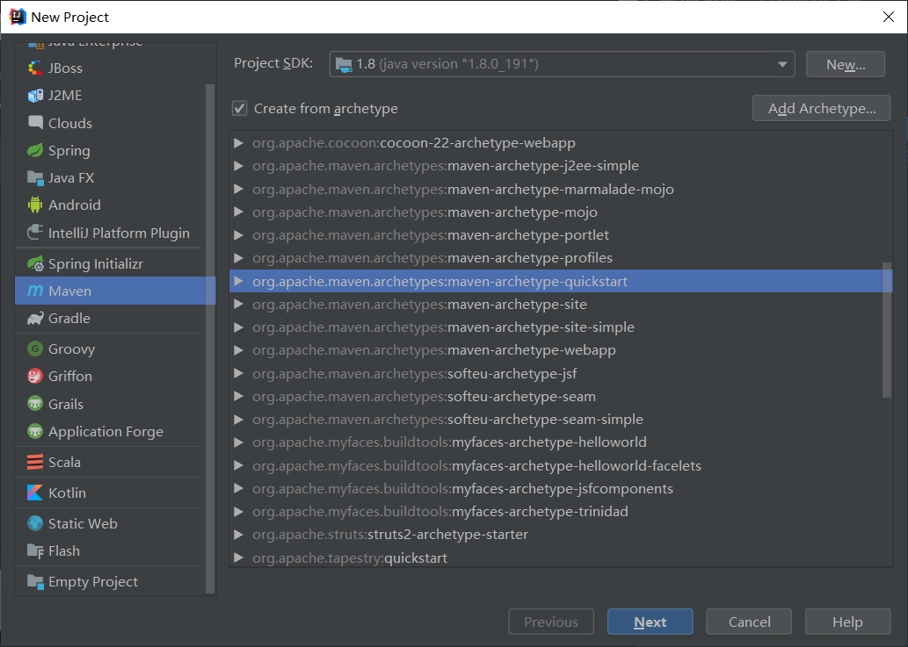
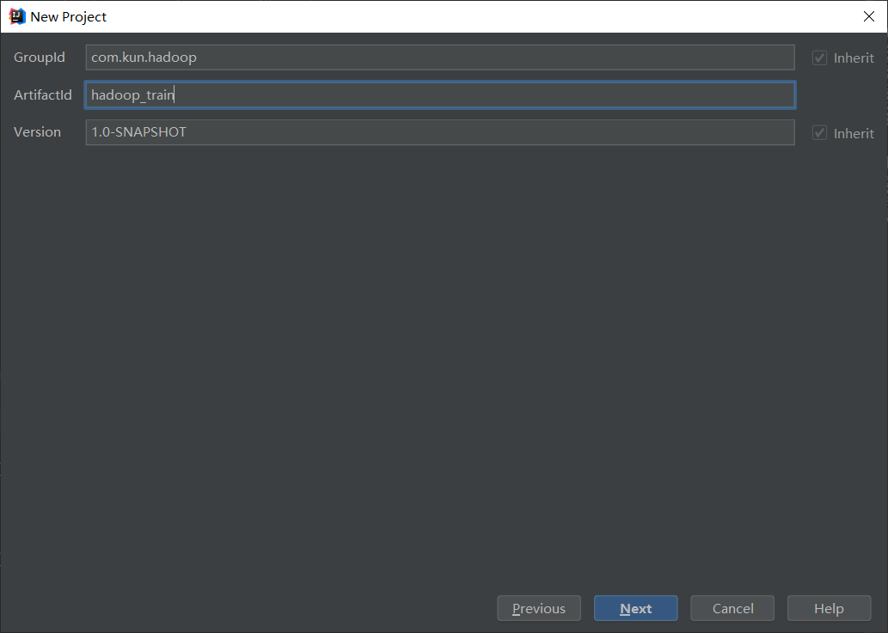
下图注意选择自己的本地maven仓库【要修改为本地自定义repository】
$MAVEN_HOME/conf/setting.xml
D:\\software\\maven_repository
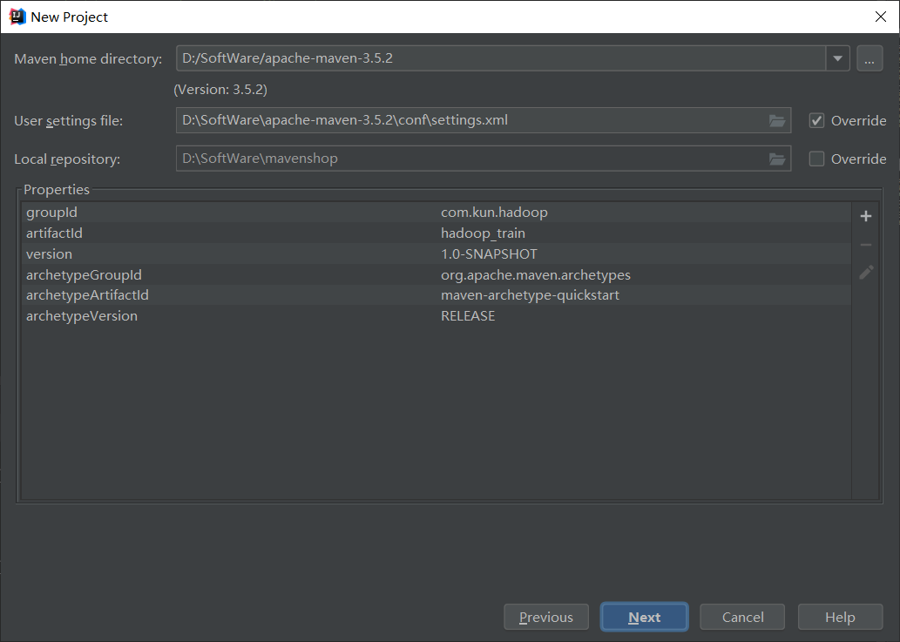
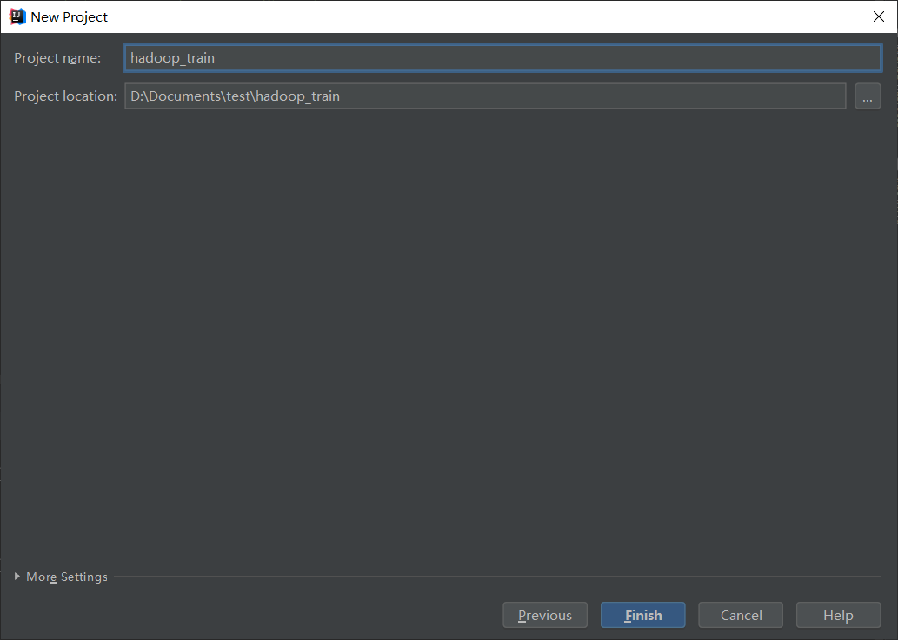
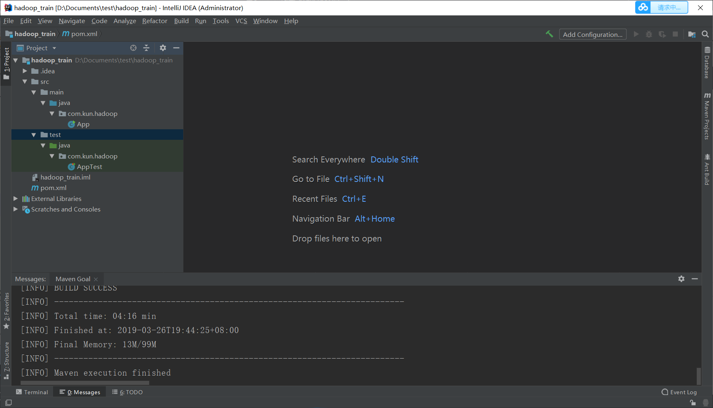
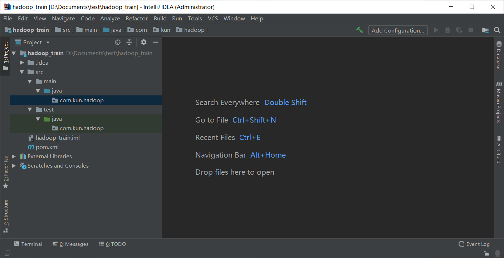
需要添加hadoop的依赖
1
2
3
4
5
6
7
8
9
10
11
12
13
14
15
16
17
18
19
20
| <properties>
<hadoop.version>2.6.0-cdh5.7.0</hadoop.version>
</properties>
<repositories>
<repository>
<id>cloudera</id>
<url>https://repository.cloudera.com/artifactory/cloudera-repos</url>
</repository>
</repositories>
<dependency>
<groupId>org.apache.hadoop</groupId>
<artifactId>hadoop-client</artifactId>
<version>${hadoop.version}</version>
</dependency>
|
一定需要和你的这个hadoop版本一致吗？ NO
maven工程打包：胖包【jar包和代码全打包】、瘦包 【一般是打成瘦包（只打包自己开发的代码不管jar包）本例子使用瘦包】
解析日志代码
清洗数据的util
1
2
3
4
5
6
7
8
9
10
11
12
13
14
15
16
17
18
19
20
21
22
23
24
25
26
27
28
29
30
31
32
33
34
35
36
37
38
39
40
41
42
43
44
45
46
47
48
49
50
51
52
53
54
55
56
57
58
59
60
61
| package com.kun.hadoop.utils;
import java.text.DateFormat;
import java.text.ParseException;
import java.text.SimpleDateFormat;
import java.util.Locale;
public class LogUtils {
DateFormat sourceFormat = new SimpleDateFormat("dd/MMM/yyyy:HH:mm:ss", Locale.ENGLISH);
DateFormat targetFormat = new SimpleDateFormat("yyyyMMddHHmmss");
public String parse(String log) {
String result = "";
try {
String[] splits = log.split("\t");
String cdn = splits[0];
String region = splits[1];
String level = splits[3];
String timeStr = splits[4];
String time = timeStr.substring(1,timeStr.length()-7);
time = targetFormat.format(sourceFormat.parse(time));
String ip = splits[6];
String domain = splits[10];
String url = splits[12];
String traffic = splits[20];
StringBuilder builder = new StringBuilder("");
builder.append(cdn).append("\t")
.append(region).append("\t")
.append(level).append("\t")
.append(time).append("\t")
.append(ip).append("\t")
.append(domain).append("\t")
.append(url).append("\t")
.append(traffic);
result = builder.toString();
} catch (ParseException e) {
e.printStackTrace();
}
return result;
}
}
|
测试上诉util
1
2
3
4
5
6
7
8
9
10
11
12
13
14
15
16
17
18
19
20
21
22
23
24
25
26
27
28
29
30
| package com.kun.hadoop;
import com.kun.hadoop.utils.LogUtils;
import org.junit.After;
import org.junit.Before;
import org.junit.Test;
public class TestLogUtils {
private LogUtils utils ;
@Test
public void testLogParse() {
String log = "baidu\tCN\tA\tE\t[17/Jul/2018:17:07:50 +0800]\t2\t223.104.18.110\t-\t112.29.213.35:80\t0\tv2.go2yd.com\tGET\thttp://v1.go2yd.com/user_upload/1531633977627104fdecdc68fe7a2c4b96b2226fd3f4c.mp4_bd.mp4\tHTTP/1.1\t-\tbytes 13869056-13885439/25136186\tTCP_HIT/206\t112.29.213.35\tvideo/mp4\t17168\t16384\t-:0\t0\t0\t-\t-\t-\t11451601\t-\t\"JSP3/2.0.14\"\t\"-\"\t\"-\"\t\"-\"\thttp\t-\t2\tv1.go2yd.com\t0.002\t25136186\t16384\t-\t-\t-\t-\t-\t-\t-\t-\t-\t-\t-\t-\t-\t-\t-\t-\t-\t-\t-\t-\t-\t-\t-\t-\t-\t-\t-\t-\t-\t-\t1531818470104-11451601-112.29.213.66#2705261172\t644514568\n";
String result = utils.parse(log);
System.out.println(result);
}
@Before
public void setUp(){
utils = new LogUtils();
}
@After
public void tearDown(){
utils = null;
}
}
|
测试结果
1
2
3
| baidu CN E 20180717170750 223.104.18.110 v2.go2yd.com http://v1.go2yd.com/user_upload/1531633977627104fdecdc68fe7a2c4b96b2226fd3f4c.mp4_bd.mp4 16384
Process finished with exit code 0
|
开发mapreduce 【这里只有map】
1
2
3
4
5
6
7
8
9
10
11
12
13
14
15
16
17
18
19
20
21
22
23
24
25
26
27
28
29
30
| package com.kun.hadoop.mapreduce.mapper;
import com.kun.hadoop.utils.LogUtils;
import org.apache.commons.lang.StringUtils;
import org.apache.hadoop.io.LongWritable;
import org.apache.hadoop.io.NullWritable;
import org.apache.hadoop.io.Text;
import org.apache.hadoop.mapreduce.Mapper;
import java.io.IOException;
public class LogETLMapper extends Mapper<LongWritable,Text,NullWritable,Text>{
@Override
protected void map(LongWritable key, Text value, Context context) throws IOException, InterruptedException {
int length = value.toString().split("\t").length;
if(length == 72) {
LogUtils utils = new LogUtils();
String result = utils.parse(value.toString());
if(StringUtils.isNotBlank(result)) {
context.write(NullWritable.get(), new Text(result));
}
}
}
}
|
开发一个程序入口
1
2
3
4
5
6
7
8
9
10
11
12
13
14
15
16
17
18
19
20
21
22
23
24
25
26
27
28
29
30
31
32
33
34
35
36
37
38
39
40
41
42
43
44
45
46
47
48
49
50
| package com.kun.hadoop.mapreduce.driver;
import com.kun.hadoop.mapreduce.mapper.LogETLMapper;
import org.apache.hadoop.conf.Configuration;
import org.apache.hadoop.fs.FileSystem;
import org.apache.hadoop.fs.Path;
import org.apache.hadoop.io.NullWritable;
import org.apache.hadoop.io.Text;
import org.apache.hadoop.mapreduce.Job;
import org.apache.hadoop.mapreduce.lib.input.FileInputFormat;
import org.apache.hadoop.mapreduce.lib.output.FileOutputFormat;
import org.apache.hadoop.yarn.util.SystemClock;
public class LogETLDriver {
public static void main(String[] args) throws Exception {
if (args.length != 2) {
System.err.println("please input 2 params: input output");
System.exit(0);
}
String input = args[0];
String output = args[1];
Configuration configuration = new Configuration();
FileSystem fileSystem = FileSystem.get(configuration);
Path outputPath = new Path(output);
if (fileSystem.exists(outputPath)) {
fileSystem.delete(outputPath, true);
}
Job job = Job.getInstance(configuration);
job.setJarByClass(LogETLDriver.class);
job.setMapperClass(LogETLMapper.class);
job.setMapOutputKeyClass(NullWritable.class);
job.setMapOutputValueClass(Text.class);
FileInputFormat.setInputPaths(job, new Path(input));
FileOutputFormat.setOutputPath(job, new Path(output));
job.waitForCompletion(true);
}
}
|
本地测试
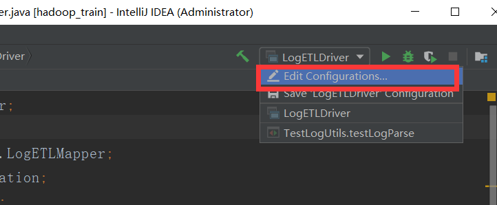
ipnut 是输入文件的目录；output/d=20180711是输出文件
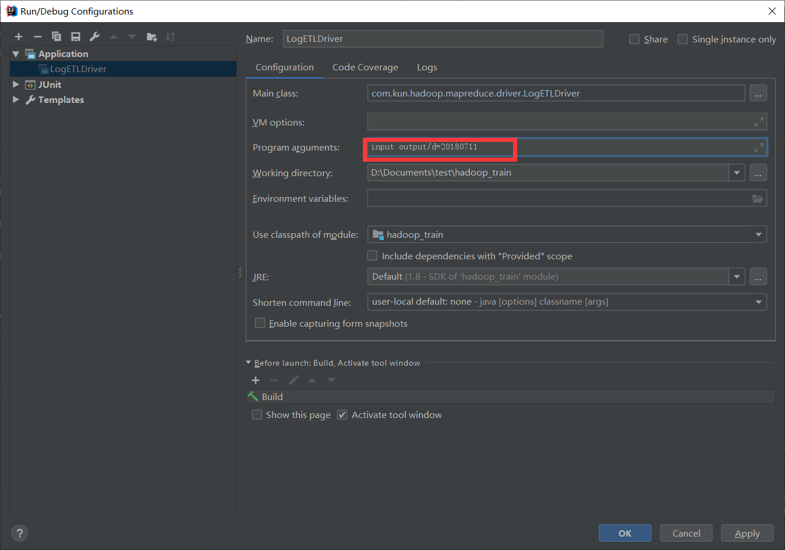
总代码链接
https://gitee.com/li_yu_kun/hadoop_train
在本地win运行项目会有坑;所以先准备：
1、下载好对应版本的hadoop；配置hadoop对应版本的环境变量即HADOOP_HOME和%HADOOP_HOME/bin【path】
2、下载对应的win下运行环境包 https://github.com/steveloughran/winutils
3、将‘hadoop.dll’和‘winutils.exe’两个文件放入本地%HADOOP_HOME/bin下；同时将hadoop.dll放入C:\Windows\System32文件夹下
4、重新运行driver端即可得到结果
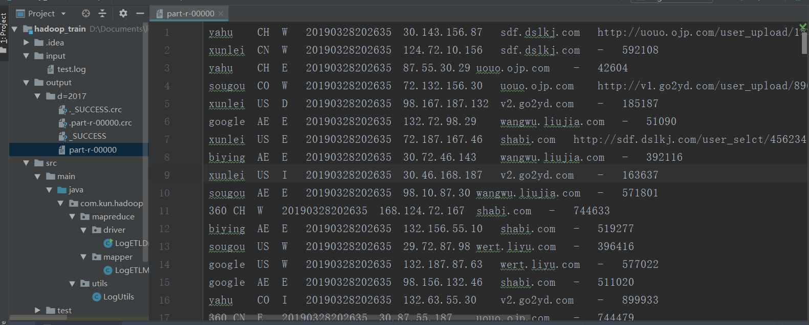
服务器测试
项目打包步骤图
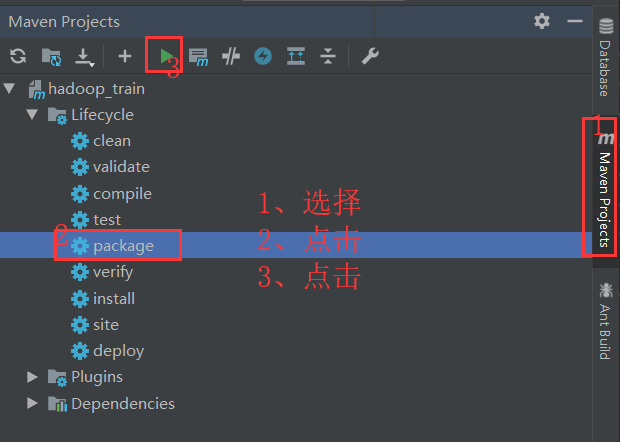
打包过程中自动会运行我们自己的单元测试；完成打包后的图示：
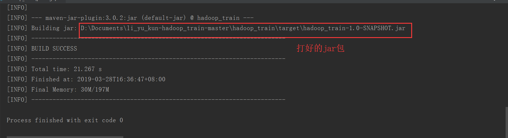
将jar包上传到hadoop集群服务器上
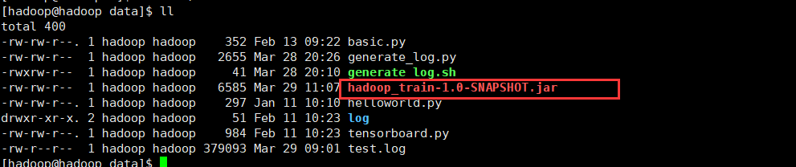
运行方式为
hadoop jar 服务器上的jar包位置 主类【见下图】 入参【日志文件路径】 出参【日志文件夹路径】
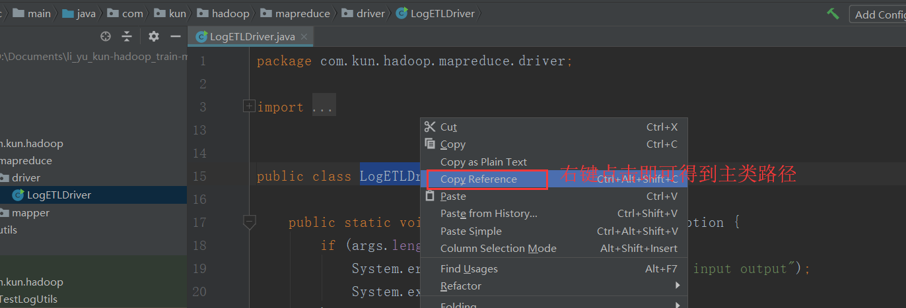
将日志文件上传到hdfs集群
[hadoop[@hadoop] data]$ hadoop fs -mkdir /input
[hadoop[@hadoop] data]$ hadoop fs -put test.log /input
[hadoop[@hadoop] data]$ hadoop fs -ls /input
Found 1 items
-rw-r–r– 1 hadoop supergroup 379093 2019-03-29 11:36 /input/test.log
[hadoop[@hadoop] data]$
运行hadoop jar /home/hadoop/data/hadoop_train-1.0-SNAPSHOT.jar com.kun.hadoop.mapreduce.driver.LogETLDriver /input /home/hadoop/data/output 得出下图结果
http://192.168.232.8:8088
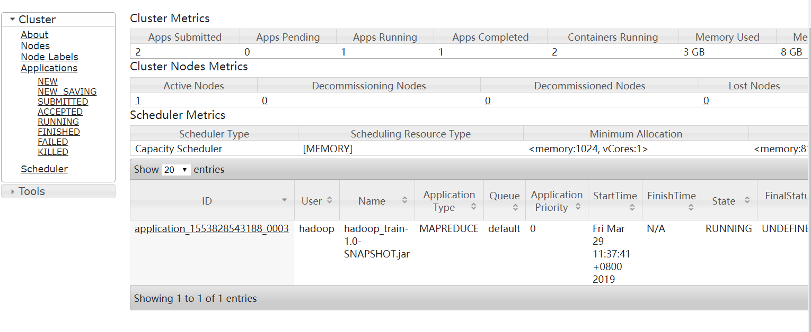
http://192.168.232.8:50070
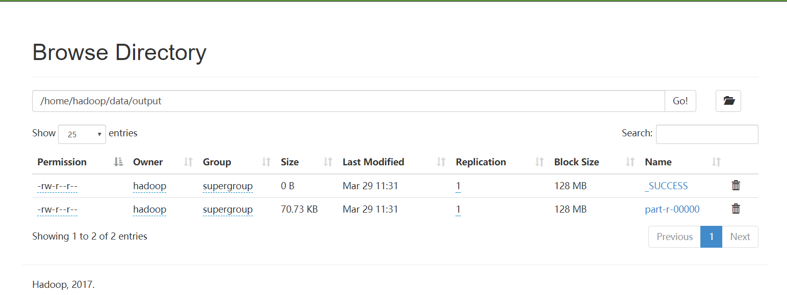
创建运行本作业的shell脚本【hadoop-train.sh 具体内容在代码框里】
1
2
3
4
5
| process_data=20180717
echo "step1:mapreduce etl"
#安装常理输出到分区里；输出参数加上day=20180717
hadoop jar /home/hadoop/data/hadoop_train-1.0-SNAPSHOT.jar com.kun.hadoop.mapreduce.driver.LogETLDriver /input /home/hadoop/data/output/day=$process_data
|
[hadoop@hadoop data]$ vim hadoop-train.sh
[hadoop@hadoop data]$ chmod u+x hadoop-train.sh
[hadoop@hadoop data]$ ./hadoop-train.sh 【运行脚本】
[hadoop@hadoop data]$ hadoop dfs -ls /home/hadoop/data/
Found 1 items
drwxr-xr-x - hadoop supergroup 0 2019-03-29 12:20 /home/hadoop/data/output
[hadoop@hadoop data]$ hadoop dfs -ls /home/hadoop/data/output
Found 3 items
-rw-r–r– 1 hadoop supergroup 0 2019-03-29 11:38 /home/hadoop/data/output/_SUCCESS
drwxr-xr-x - hadoop supergroup 0 2019-03-29 12:21 /home/hadoop/data/output/day=20180717
-rw-r–r– 1 hadoop supergroup 72432 2019-03-29 11:38 /home/hadoop/data/output/part-r-00000
[hadoop@hadoop data]$ hadoop dfs -ls /home/hadoop/data/output/day=20180717
Found 2 items
-rw-r–r– 1 hadoop supergroup 0 2019-03-29 12:21 /home/hadoop/data/output/day=20180717/_SUCCESS
-rw-r–r– 1 hadoop supergroup 72432 2019-03-29 12:21 /home/hadoop/data/output/day=20180717/part-r-00000
Hive完成最基本的统计分析
mapreduce作业不用指定内存，是指定不了的
创建外部表
location指定的不是mapreduce作业的输出路径 why？因为会覆盖掉
1
2
3
4
5
6
7
8
9
10
11
12
| create external table hadoop_access (
cdn string,
region string,
level string,
time string,
ip string,
domain string,
url string,
traffic bigint
) partitioned by (day string)
ROW FORMAT DELIMITED FIELDS TERMINATED BY '\t'
LOCATION '/home/hadoop/data/clear'
|
启动hive
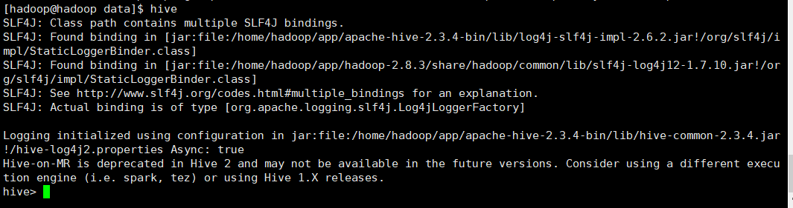
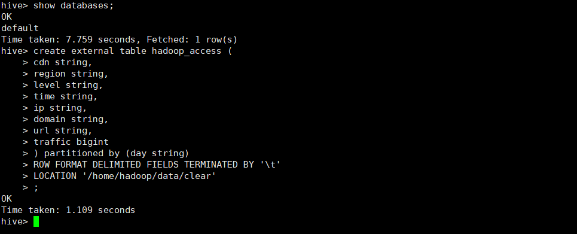
移动数据到外部表对应的目录
[hadoop@hadoop data]$ hadoop fs -ls /home/hadoop/data/clear
ls: `/home/hadoop/clear’: No such file or directory
[hadoop@hadoop data]$ hadoop fs -mkdir /home/hadoop/data/clear
[hadoop@hadoop data]$ hadoop fs -ls /home/hadoop/data/clear
[hadoop@hadoop data]$ hadoop fs -mkdir -p /home/hadoop/data/clear/day=20180717
[hadoop@hadoop data]$ hadoop fs -mv /home/hadoop/data/output/day=20180717/part-r-00000 /home/hadoop/data/clear/day=20180717
[hadoop@hadoop data]$ hadoop fs -ls /home/hadoop/data/clear/day=20180717
Found 1 items
-rw-r–r– 1 hadoop supergroup 72432 2019-03-29 12:21 /home/hadoop/data/clear/day=20180717/part-r-00000
[hadoop@hadoop data]$
刷元数据到hive中
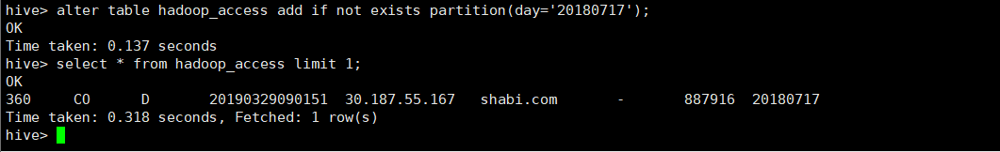
统计每个域名的traffic之和
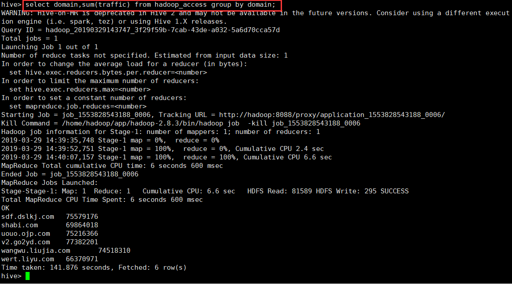
补全hadoop-train.sh脚本 然后执行【./hadoop-train.sh】
1
2
3
4
5
6
7
8
9
10
11
12
| process_data=20180717
echo "step1:mapreduce etl"
hadoop jar /home/hadoop/data/hadoop_train-1.0-SNAPSHOT.jar com.kun.hadoop.mapreduce.driver.LogETLDriver /input /home/hadoop/data/output/day=$process_data
echo "step2:hdfsdata mv hive"
hadoop fs -rmr /home/hadoop/data/clear/day=$process_data
hadoop fs -mkdir -p /home/hadoop/data/clear/day=$process_data
echo "step3:Brush the metadata"
hive -e "alter table hadoop_access add if not exists partition(day=$process_data)"
|
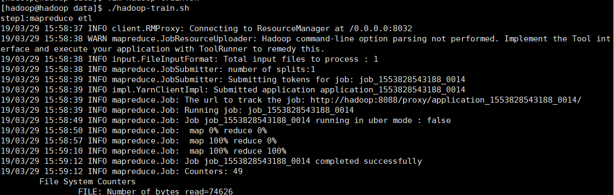
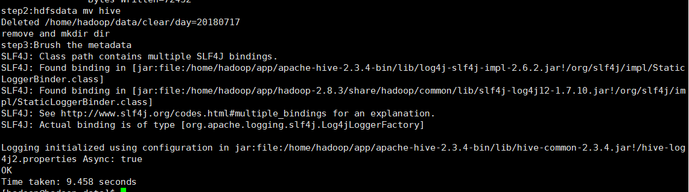
优化：建议：创建一张parquet，然后修改shell就搞定了
创建一个新表，parquet表
可以在做查询操作之前将hadoop_access 表的数据insert到新表parquet中；删除原表；这样对存储和以后的查询操作都有性能提升
traffic统计 text vs parquet 对比结果